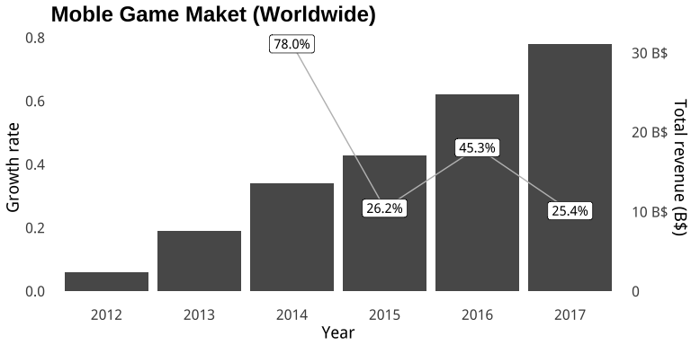
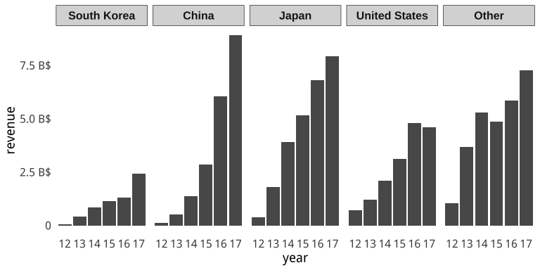
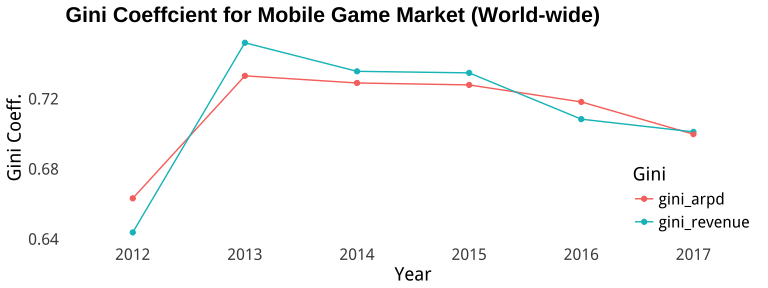
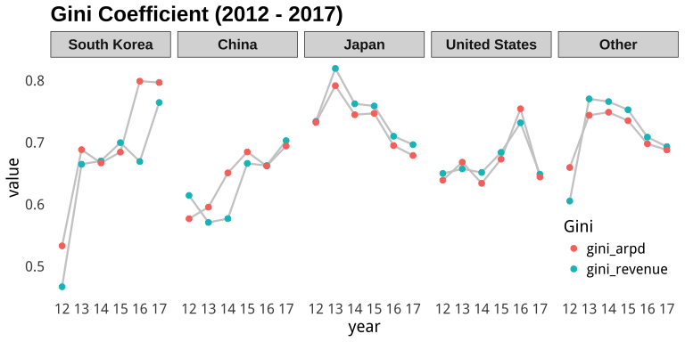
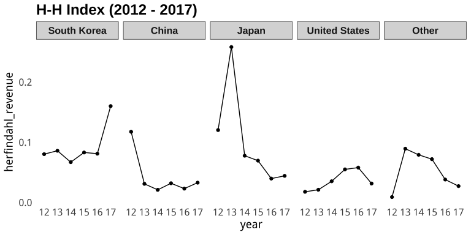
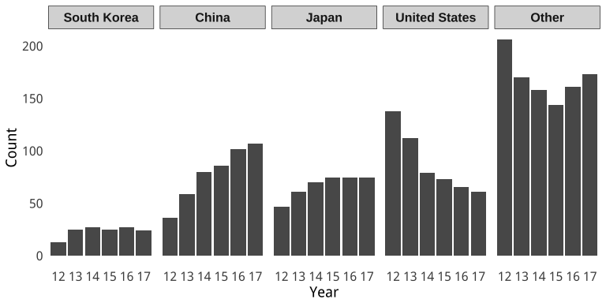

tl; dr
- 무서운 성장세로 보면 모바일 게임이 이제 대세다!
- 일본 시장이 아직은 짱짱맨!
- 한국 모바일 게임 시장은 매출 분포나 집중도에서 활력을 잃어가고 있을지 모른다.
Motivation
남들도 2017년 결산을 하길래 나도 한번 해보기로 한다. 그런데 변변하게 아는 내용도 별다른 재주도 없으니 그나마 할 수 있는 것 중에서 재미있어 보이는 것으로 해보는 걸로…
Go West!
오늘날 게임 업계의 서부는 단연 “모바일”이다. 올해 기점으로 한국이나 해외나 모바일 게임 시장이 기존의 온라인 게임 및 콘솔 게임 시장과 비슷한 규모로 성장했다. 그다지 좋아하지 않는 삼국지 비유를 들자면, 온라인-콘솔(게임기)-모바일이 천하삼분지계를 이루었다고나 할까?
모바일 앱 시장의 집계 데이터를 서비스하는 Aㅇㅇ를 통해 2017년 한해 동안 가장 많은 매출을 올린 게임 1,000개를 뽑아냈다. 일단 상위 15개의 게임부터 보자. 미리 말해두면, Aㅇㅇ 서비스의 자료는 실데이터가 아닌 추정치이다. 사실 구글이나 애플과 같은 플랫폼 홀더가 아닌 이상 정확한 데이터를 알 수 없으니, 그나마 신뢰 받는 데이터에 의지할 수 밖에 없다는 점, 널리 양해 바란다.1 이하 제시되는 표나 그림에서 금액의 단위는 모두 미국 달러(USD)이며, Aㅇㅇ에서 집계햐는 액수는 플랫폼 수수료 30%를 제외한 금액이란 점을 미리 밝혀둔다.
| 매출순위 | 게임 | 매출(1억 $) | 앱 츨시일 | 모기업 | 모기업 국가 |
|---|---|---|---|---|---|
| 1 | Honour of Kings | 11.53 | 2015-10-26 | Tencent | China |
| 2 | Monster Strike | 11.27 | 2013-09-27 | mixi | Japan |
| 3 | Fate/Grand Order | 9.29 | 2015-07-31 | Sony | Japan |
| 4 | Lineage 2 Revolution | 7.20 | 2016-12-13 | Netmarble | South Korea |
| 5 | Fantasy Westward Journey | 6.89 | 2015-04-21 | NetEase | China |
| 6 | Clash Royale | 5.97 | 2016-01-04 | Supercell | Finland |
| 7 | Candy Crush Saga | 5.93 | 2012-11-14 | Activision Blizzard | United Kingdom |
| 8 | Lineage M | 5.81 | 2017-06-20 | NCSOFT | South Korea |
| 9 | Clash of Clans | 4.96 | 2012-06-14 | Supercell | Finland |
| 10 | Pokemon GO | 4.09 | 2016-07-05 | Niantic | United States |
| 11 | Puzzle & Dragons | 3.93 | 2012-02-20 | GungHo Online Entertainment | Japan |
| 12 | Game of War - Fire Age | 3.91 | 2013-07-25 | MZ | United States |
| 13 | Dragon Ball Z Dokkan Battle | 3.91 | 2015-01-29 | BANDAI NAMCO | Japan |
| 14 | Mobile Strike | 3.67 | 2015-07-10 | MZ | United States |
| 15 | Onmyoji | 3.64 | 2016-09-01 | NetEase | China |
일단 첫눈에 알 수 있는 내용부터 보자. 이른바 ‘글로벌’ 히트 게임은 착시다. 수퍼셀에서 만든 “크래시로열”, “크래시오브클랜” 그리고 한국의 컴투스에서 내놓은 “서머너스워” 같은 히트작이 존재하지만 시장은 뚜렷하게 구분되어 있다. 올 한 해 동안 가장 많은 돈을 번 “왕자영요Honour of Kings”는 중국어권과 한국 등의 동남아 권역에서만 서비스된다.2 나머지 2017년의 흥행 게임들도 비슷하다. 한국에서 엄청난 흥행을 기록한 “리니지M” 역시 한국, 대만, 홍콩 이외의 지역에서는 아직 서비스되지 않고 있다. “리니지2레볼루션”이 그나마 글로벌 성과를 냈지만, 역시 한국 흥행과 비교할 수준은 아니다. 2위에 오른 “몬스터 스트라이크” 역시 일본에서만 잘되는 게임이다. 2017년에 흥행한 상위 15개 타이틀에서 보듯이, 모바일 게임 시장은 국가별로 혹은 지역별로 상당한 정도로 분절화되어 있다. 플랫폼이 글로벌하다고 해서, 문화적인 차이가 사라지는 것은 아니었다.3
시장 전체는 어땠을까? 2017년만 봐서는 알 수 없으니 내친 김에 앱애니 데이터가 모인 2012년부터 살펴보자.

모바일 게임은 맹렬하고 지속적인 성장세를 유지하고 있다. 지금은 삼분지대계를 얼추 이루고 있지만, 앞으로 3–4년이 지나면 모바일 게임이 게임 업계에서 가장 큰 시장을 형성하지 않을까 싶다.4
4년 동안 형성된 시장 총액의 단순 합을 지역별로 표시했다. 모바일은 누가 뭐라도 “Asia First”다. 한중일을 합치면 시장 점유율이 50% 이상이다. “왕자영요”, “몽환서유” 같은 엄청난 히트작이 나온 중국 시장이지만, 아직은 일본 시장이 더 두텁다. 다만 중국의 빠른 성장이 주목할만 하다. 이미 2017년 중국 시장은 국가 단위로 세계 최대의 시장이 되었다. 국가별 매출 변화의 상세한 추이는 다음의 그림을 참고하라.

Indepth anlysis
이제 국가별-연도별로 살짝 더 들춰보자. 내 질문은 다음과 같다.
- 게임업계의 매출 불평등의 정도는?
- 게임업계의 산업 집중도는?
배운게 도둑질이라고 돈버는 데 도움되는 날카로운 통찰보다는 이런게 더 관심이 가더라. 어쩔 수 없다! ㅠㅠ 하지만 어설프게 배운 도둑질인지라서 해당 질문은 철저하게 다 파보진 않겠다. 첫번째 질문은 지니 계수로, 두번째 질문은 히르쉬-허핀달 지수로 소략하게 살펴보자.
지니 계수는 두 가지 자료에 대해 계산해 볼 예정이다. 해당 연도의 총매출의 지니 계수는 기본이다. 그런데 모든 게임이 1월 1일부터 서비스되지는 않을 것이고, 연중 나오는 게임도 있을 것이다. 이런 게임들에게 불이익을 주지 않기 위해서 당해 연도 매출을 당해 연도의 서비스 일수로 나눈 일간평균매출(Average Revenue Per Day: ARPD)라는 조작 지표를 도입할 예정이다. 다만 게임의 경우 초반에 매출이 압도적으로 높게 나오기 때문에 해당 연도에 서비스된 일수가 충분하지 않은 게임들을 제외했다. 대략, 어림잡아서 서비스된 일수가 1년의 1/3 쯤에 해당하는 122일에 미치지 못하는 게임들이 제외 대상이다.

일단 연도별로 업계 전체의 지니 계수를 보자.5 꽤나 높은 수준이지만 여타 엔터테인먼트 업계에 비해 유달리 못은 수준이라고 보기는 힘들다. 영화 업계 혹은 음악 업계 역시 비슷한 양상을 보이는 것으로 알려져 있다. 유행에 민감한, 즉 네트워크 효과의 지배를 받을 수 밖에 없는 흥행 산업에서 “될놈될 잘놈잘”은 보편적인 현상이다.

국가별로 지니 계수의 변동을 보자. 일본과 이외 국가들은 하향하는 추세이며 미국은 비슷한 수준을 유지하는 것으로 추측된다. 중국은 상향추세이다. 한국은 다소 미묘하다. 2012년 자료의 부정확성을 감안하면 대략 0.68–0.7 사이를 유지하다가, 2017년에는 크게 높아졌다. 이는 2017년 하반기에 출시된 엔씨소프트의 “리니지M” 때문에 발생한 것이다. 물론 2012년에서 2013년으로 건너오면서 한국의 모바일 게임 시장이 넷마블을 중심으로 재편되었기 떄문에 지니계수의 상승이 그럴 듯한 이야기처럼 느껴지기는 한다. 아울러, ARPD 역시 상승하는 추세라는 점을 함께 고려하면, 잘되는 게임이 더 잘되는 추세가 작용하고 있다고 조심스럽게 말할 수 있다.

산업집중도를 표시하는 H-H지수를 살펴보자. 대략, 0.15 값을 기준으로 이것보다 낮으면 경쟁적이라고 판단하고 0.15보다 높을수록 집중도가 높다고 판단한다. 일본은 매우 높은 집중도를 보이다가 최근들어 경쟁적인 환경으로 변했다. 중국은 경쟁이 치열해졌다는 것을 쉽게 확인할 수 있다. 한국의 경우 비교적 경쟁적인 환경을 유지하다가 2017년에 갑자기 상승했음을 알 수 있다. 이 역시 “리니지M”의 효과이기 때문에 집중도가 높아지는 것이 경향인지 판단하려면 앞으로 1~2년 후의 추이를 더 지켜봐야 할 것이다.

마지막으로 각 국가별 그리고 연도별로 1,000위 안에 이름을 올린 회사 및 게임 앱의 갯수를 살펴보자. 이 숫자들 역시 한국 모바일 게임 시장이 여타 국가들에 비해서 다소 정체된 시장임을 보여주고 있다.
Part II?
사실 좀 더 분석해야 하는 내용들이 남아 있다. 몇 가지 적어보자.
- 회사별 분석: 위의 분석을 보면서 의문을 품은 분들이 있을 것이다. 지니 계수나 H-H 지수는 개별 게임이 아니라, 회사를 기반으로 계산해야 하는 것이 아닐까? 맞다. 다만, 위의 분석은 각국의 시장의 모습을 파악하기 위해서 이루어진 것임을 감안해주시면 좋겠다.
- 출시 후 1년이 지나서도 높은 인기를 누리는 게임: 모바일 게임의 생애주기는 여전히 논란거리다. 과연 여타 장르의 게임에 비해서 모바일 게임의 생애주기가 훨씬 짧을까?
파트1은 귀찮아서 이 정도에서 그만! ㅎ
“나는 Aㅇㅇ 서비스는 못 믿어!,” 라고 하는 분들은 여기서 페이지를 닫으시라.↩
한국에서는 “팬타스톰”이라는 이름으로 서비스되고 있으나 중국 같은 대박을 이루지는 못했다.↩
사실 아래 분석은 시장에 대해서 다소간의 혼란이 존재한다. 예를 들어 수퍼셀은 핀란드 기업이지만 실제로 주로 매출을 내는 곳은 전세계이다. 이렇듯 다소 혼란의 여지가 있으나, 글로벌로 활동하는 게임의 종류가 많지 않다는 점을 고려해, 다소간의 개념적 혼란을 무릅쓰고 둘을 혼용해서 사용하도록 하겠다.↩
Aㅇㅇ 서비스는 2012년에 서비스를 시작했다. 이떄는 여러가지로 데이터도 부족했기 때문에 성장률로는 2012년에서 2013년이 200%가 넘는 수준이지만 이 시기는 성장률 계산에서 제외했다. 2012년을 전부 뺄까도 생각했지만 보는 사람이 감안하고 보는 편이 낫겠거니 싶어 그냥 두었다.↩
지니 계수에 대해서 간략하게 해설하겠다. 쉽게 말해 일정한 분포를 지닌 수치열의 불평등도를 계산하는 것이다. 0에 가까울수록 평등하고 1에 가까울수록 불평등하다. 즉, 0.7 정도 되면 꽤나 높은 정도로 불평등한 것이다.↩